Chapter 8 Continuing Education at Dawson
** Under Construction **
The department of Continuing at Education offers evening courses across many disciplines throughout the year. The purpose of this report is to give a broad overview of the demographics and sector-level metrics for students taking courses within Cont Ed.
8.1 Services
Herein, we look at the services offered by the Division of Continuing Education. This section is meant to give an overview of the breadth and depth of the offerings outside of the regular day division.
8.1.1 Continuing Education’s Growth over Time
How have each of the departments increased their ContEd offerings over time?

The above figure shows that the demand for courses in the Math department (department 201) has steadily increased over the last seven years, as have the Humanities (department 345), and English (602 and 603).
8.1.2 Department Level Seat Distributions
Which parts of Continuing Education are the most important in 2016?

The previous plot shows that while there are many departments that offered courses in 2016, the bulk share were in Math, English and the Huamnities. Of note here are the departments that require specialized lab spaces, such as Chemistry (202) and Physics (203), which will be looked at more closely as we move forward.
8.1.3 Course Level distributions
If we look at the three most important departments (Math,Humanities and English) in 2016, how are the seats distrinuted across courses?

8.1.4 Specialized spaces
If we look at the departments that require specialized spaces (i.e. labs), in 2016, how are the seats distributed by course? - Has this evolved over time? - What are the seasonal variations?
8.1.4.1 Winter

8.1.4.2 Fall

8.1.4.3 Summer

8.2 Students
8.2.1 Demographics
Who are the students using continuing education services?
- are there gender differences?
- are there age differences?
- do these demographics change over time?
- are there seasonal variations?
- are there differences in different departments?
8.2.1.1 Sexe

Of note in the above figure: - English (603): 2016 marks the first year where male students have a passing average - Math (201): failing averages in all semesters - Chemistry (202): fairly consistent performance across time for both genders, with slightly aging demographic over the years - Physics (203): most consistent in academic performance and demographics - Computer Science (420): most widely varying in both dimensions across time
What is impact of condensed summer term?

Finally, as there seems to be relatively little change in these patterns over time, we can collapse all over the past seven years,
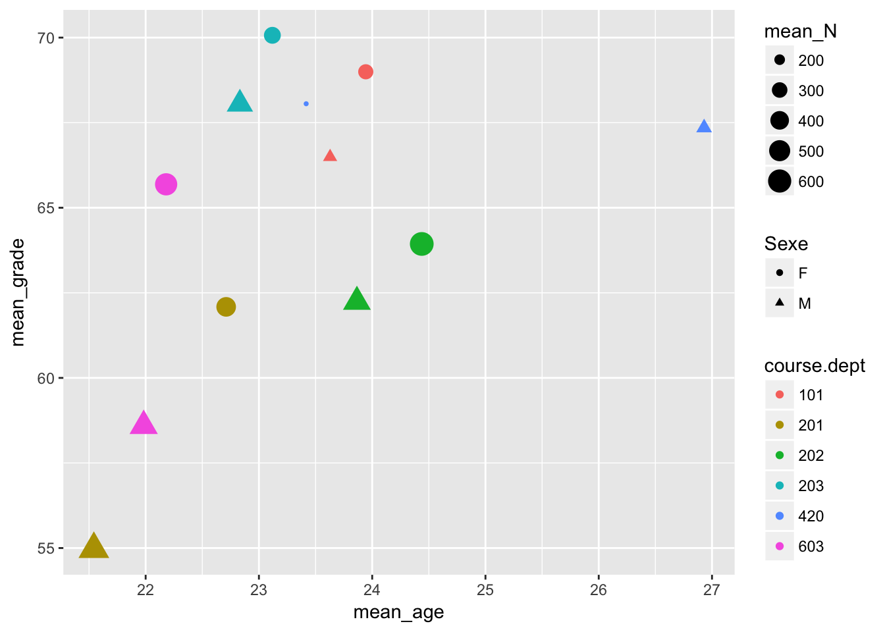
and then add on the average grade achieved by students with the same gender, in the same courses from the same disciplines, but from the ``regular’’ day division.
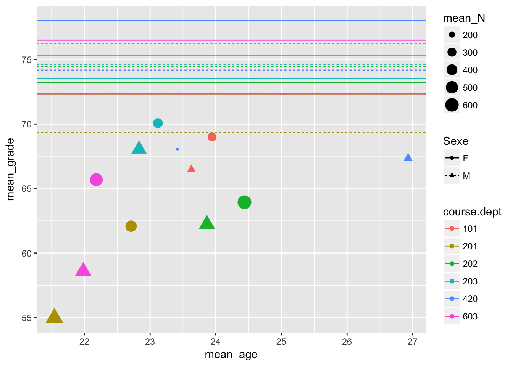
What is clear from the above is that - in general, students do better in their day division courses than in the their Continuing Education Counterparts - Math is the most difficult subject both in the day division and in the evening - the Physics department has the smallest performance gap between day students and those in Continuing Education
8.2.1.2 Birth Place
Now, instead of looking at effect of gender, we focus instead on Birth Place. To Quebec residents stand out in any consistent way, as compared to those born elsewhere?

Some observations from the above figure: - The older students in Continuing Education were in large part not born in Quebec.
Again, what is impact of condensed summer term?

Finally, as there seems to be relatively little change in these patterns over time, we can collapse all over the past seven years,
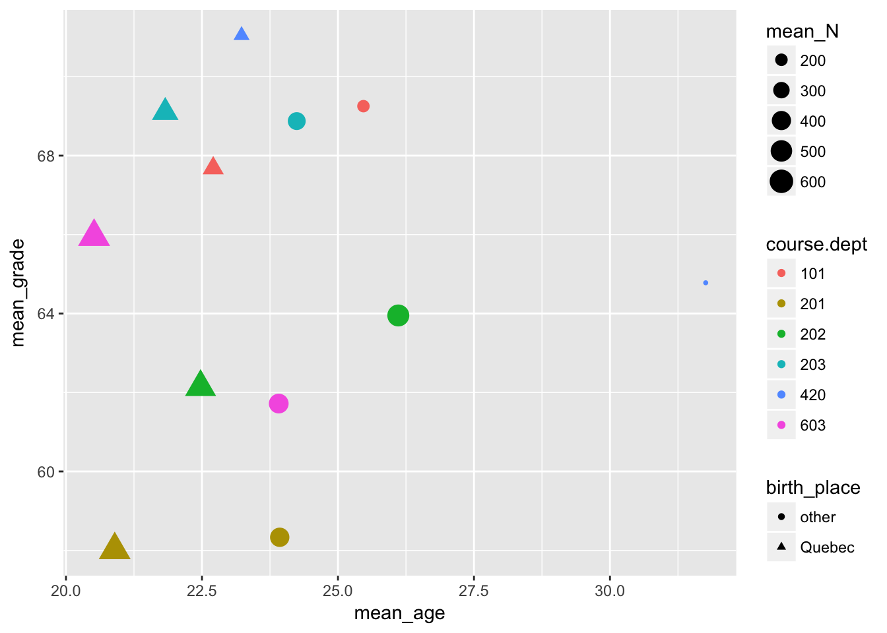
and then add on the average grade achieved by students with the same birth place (namely quebec residents vs other), in the same courses from the same disciplines, but from the ``regular’’ day division.
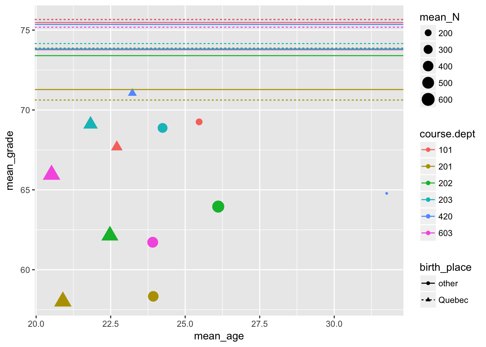
The same observation as from our study of gender demographics above holds: regardless of birthplace, day division students outperform their day division counterparts, and this gap is smallest in the physics department. The overall weakness in math is not limited to any one gender, nor explained by birth place
8.2.1.3 Mother Tongue
Finally we look at the possible impact of Mother Tongue. How do anglophones, francophones, and allophones compare in Continuing Education?

Again, what is impact of condensed summer term?

Finally, as there seems to be relatively little change in these patterns over time, we can collapse all over the past seven years,
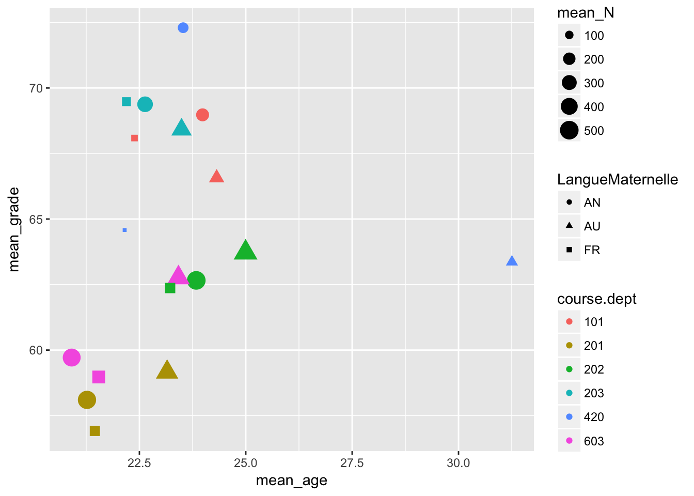
and then add on the average grade achieved by students with the same mother tongue, in the same courses from the same disciplines, but from the ``regular’’ day division.
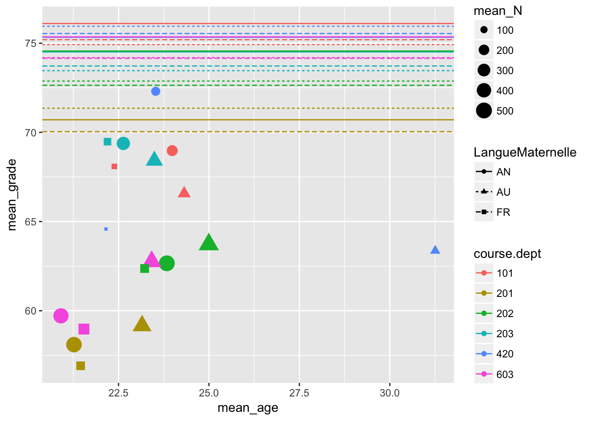
8.2.2 Success Rates
There are many students who take courses through both Continuing Education, and the regular day division over the course of their time at Dawson. One way of measuring the difference in the student experience here would be to look at those students alone, and compare the average of their grades in each division, while controlling for discipline. (the diagonal in each facet is simply meant to provide a reference for a hypothetical 1-to-1 correlation.) In order to control for student strength, we bin by overall average of high school grades.
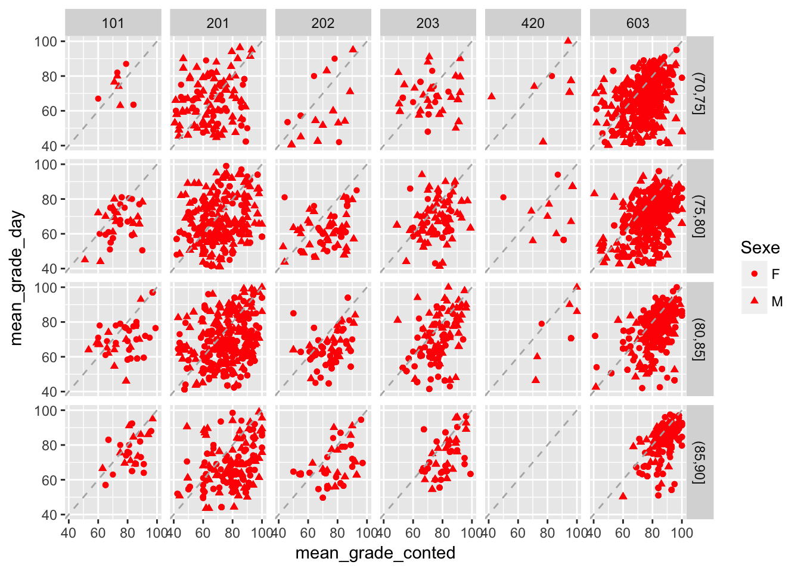
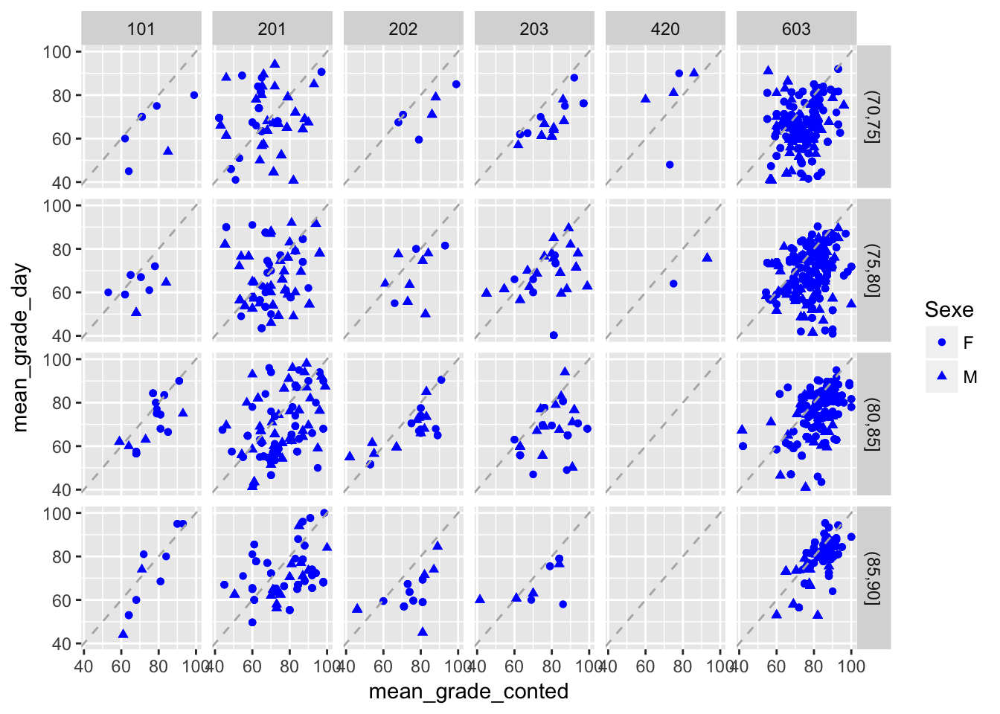
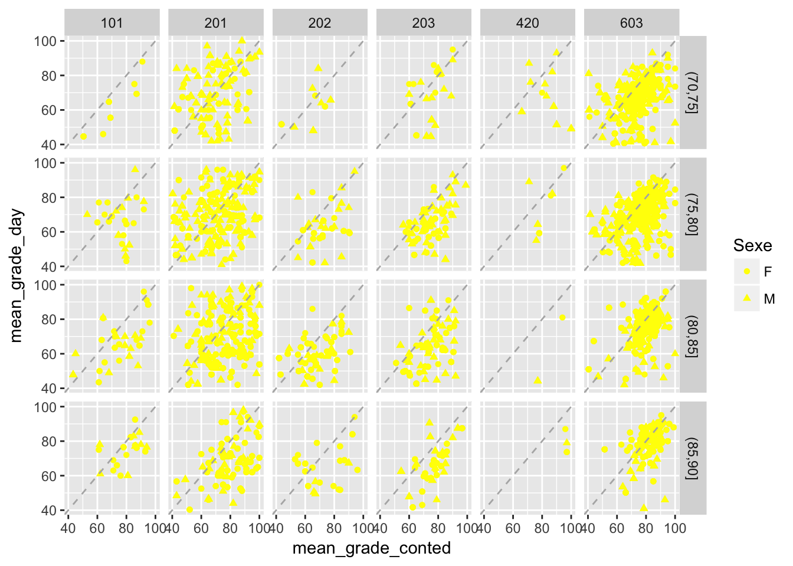
The above graphic shows that stronger students seem to be able to do as well in their day courses as they do in their evening ones, but this is not the cas for weaker students. What’s more, there seems to be no consistency across departments.
The following graphic is the same as above, but instead of binning students by their High School Average (as a proxy for over student strength), we use students first term CEGEP grades, and then plot their performance in day and evening courses averaged over all subsequent terms (disaggregated again by discipline).
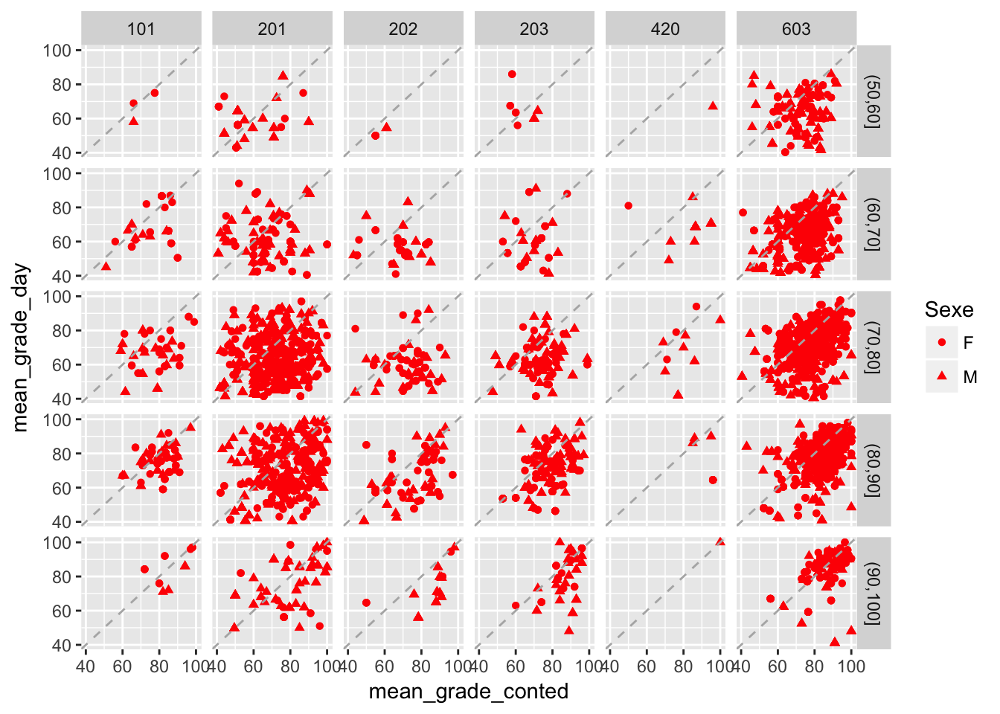
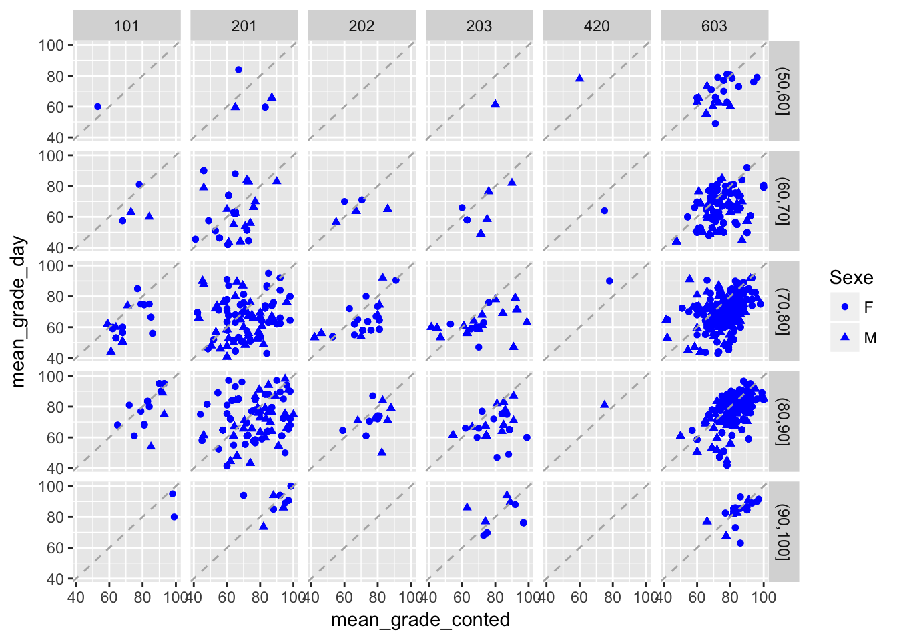
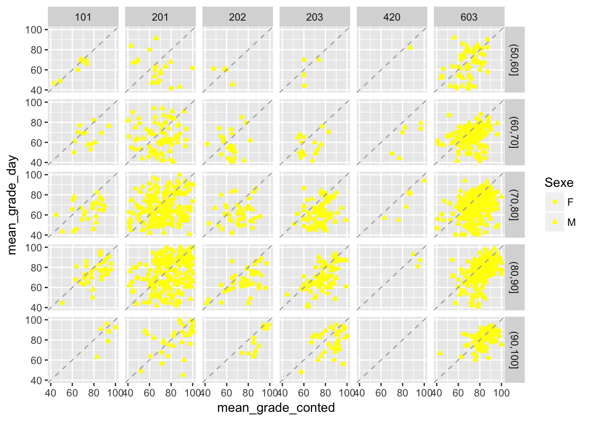